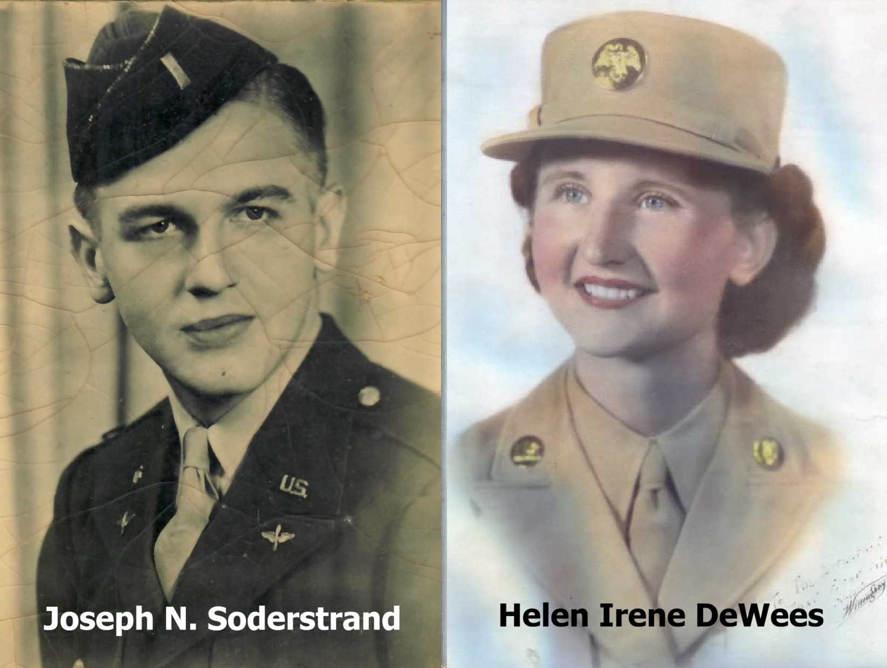
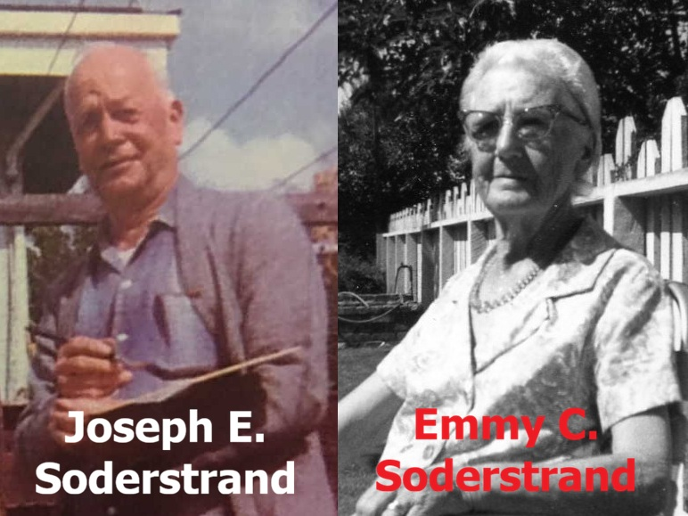
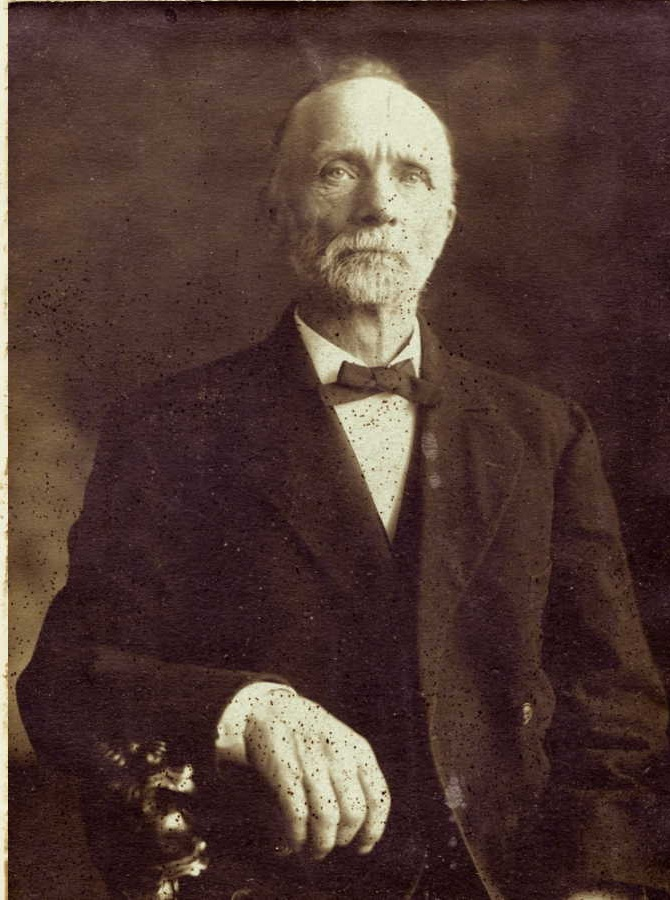
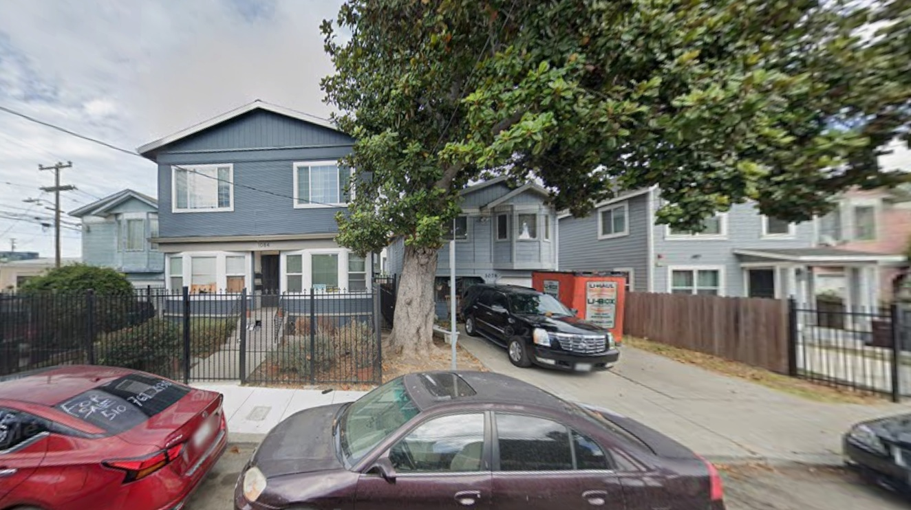
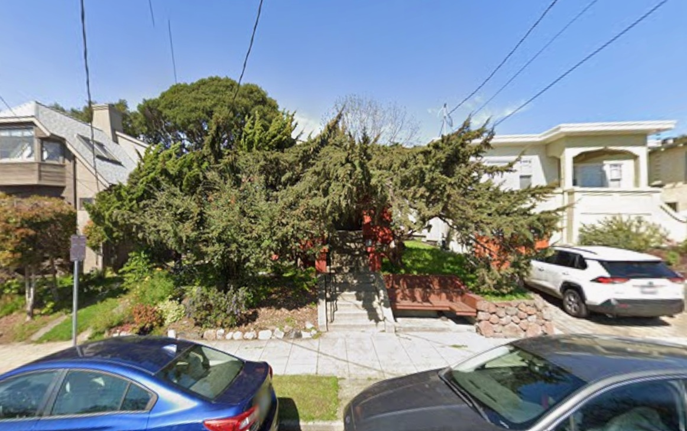
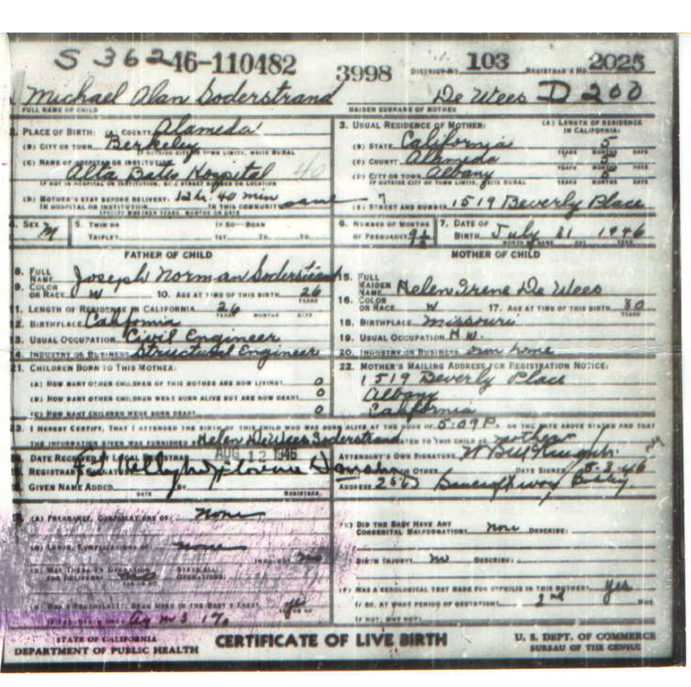
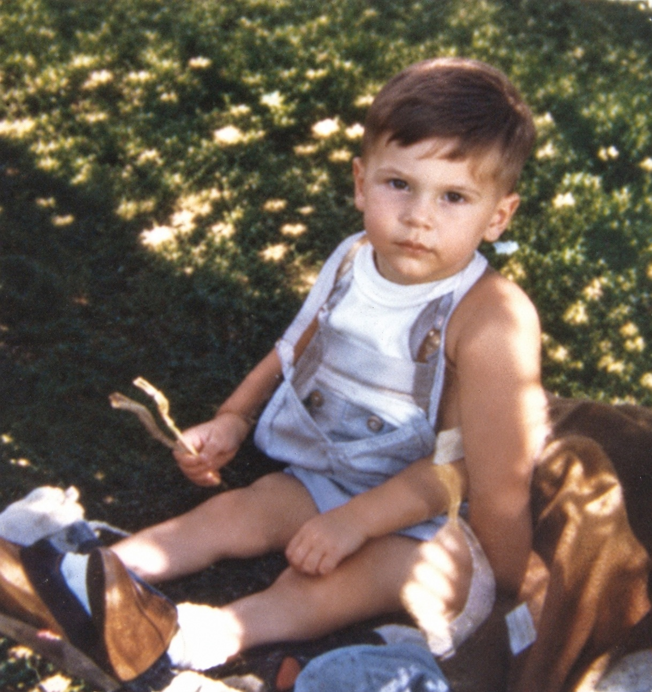

Berkeley, Oakland, and Albany
1946–1949

My parents, Joseph Norman Soderstrand and Helen Irene De Wees, were both serving in the military near the end of World War II. Dad was a lieutenant in the U.S. Army Air Forces, and Mom was enlisted in the Women's Army Corps (WAC). They were discharged in early 1946. They were engaged, but they had not chosen a wedding date or place.
They planned to drive to Oakland, California, so Mom could meet Dad’s parents. Along the way, they realized that Valentine’s Day was approaching—or perhaps already upon them—and decided on the spur of the moment to find a justice of the peace and get married. According to the family story, they married in Alamogordo, New Mexico, on February 14, 1946.
Mom had never been to California, but she had high expectations. She told me that she imagined the streets would be paved with gold. She was also excited to meet her new father- and mother-in-law. Unfortunately, neither expectation was quite fulfilled. San Francisco was lovely, but not what she had imagined. And Mom, who was very much a “meat-and-potatoes” person, was shocked when she entered Dad’s parents’ home and was greeted by the strong smell of fish. She hated the smell and, as I understand it, nearly vomited!

Grandpa and Grandma did not seem particularly excited to meet Mom. I suspect they were disappointed that Dad had not married a local Swedish girl. It seems that Mom and my grandparents were all disappointed by that first meeting.
The house Dad brought Mom to was one of three houses on 24th Street in Oakland built by my great-grandfather, Peter Soderstrand. Peter immigrated from Sweden in the 1870s and became a successful cabinetmaker and carpenter. He purchased the first three parcels from the corner toward the middle of the block at 1078–1088 24th Street.
In 1946, the corner house belonged to my great-aunt Esther. The middle house belonged to my great-aunt Anna and great-uncle Arthur, and the main house belonged to my grandfather, Joseph E. Soderstrand. Each property had multiple addresses, and the houses included rental units that provided a significant source of income.


The three houses Peter built were demolished in the 1980s and replaced by the houses you see here. The only thing left from his time is the tree he planted in the 1870s. It is now more than 150 years old and still stands on the property.
My grandparents’ main house stood behind and to the right of the tree. Anna and Arthur’s house was in the middle. Esther’s corner house was once aligned with the other two houses; it is now set farther back from the street.
That old tree is especially meaningful to me. It was still there when I was a small child, and it is where I took my first steps.

My grandmother Emmy also owned a house at 1519 Beverly Place in Albany. This is what it looks like today; the trees now almost completely hide the entrance. The tenants moved out around the time my parents arrived, and my grandmother rented the house to them.
My grandfather and my father were both born in the family’s main house on 24th Street in Oakland. I was the first in our family to be born in a hospital. I was born at Alta Bates Hospital while my parents were living in Albany.

I do not remember much about those years in Albany, but two things stand out clearly. First, I remember the steps leading up to the front door—the steps visible in the photograph above. In my memory, they came up to my waist. They seemed enormous, and crawling up them was quite a challenge!
I also remember that the inside of the house had a circular route through the living room, kitchen, past the bedrooms, and along the hallway back to the living room. I had a toy fire truck large enough for me to sit in and pedal around that loop again and again. My “Tommy Tucker” doll rode in the back of the truck.
I have photographs and 8mm home movies from our time in Albany, including footage of my first birthday party. I was so excited about the birthday cake that I reached for it and knocked it off onto the grass in the front yard. Mom managed to salvage the cake.
There are no photographs or movies from around my second birthday, however, because that time was marked by great sorrow. I was born on my mother’s birthday, July 31, 1946. On July 31, 1948, my younger brother was born, but he died about an hour later. His death devastated my parents.
His official birth and death certificates identify him as “Baby Boy Soderstrand,” but Dad always referred to him as “Joseph Norman Soderstrand, Jr.”

Down the street on Beverly Place lived my playmate Gary Price, who was about my age. His parents, Jack and Betty Price, were good friends with my parents. The two couples took turns babysitting: I went to the Prices’ house on Friday evenings, and Gary came to ours on Saturdays. That gave both sets of parents a regular date night each week.
My third birthday was not celebrated in Albany. By then, our family had moved to Sacramento, and the Prices had moved there too, settling just a few blocks away. Gary and I remained friends through elementary, middle, and high school. A friendship that began on Beverly Place in Albany continued for many years in Sacramento.